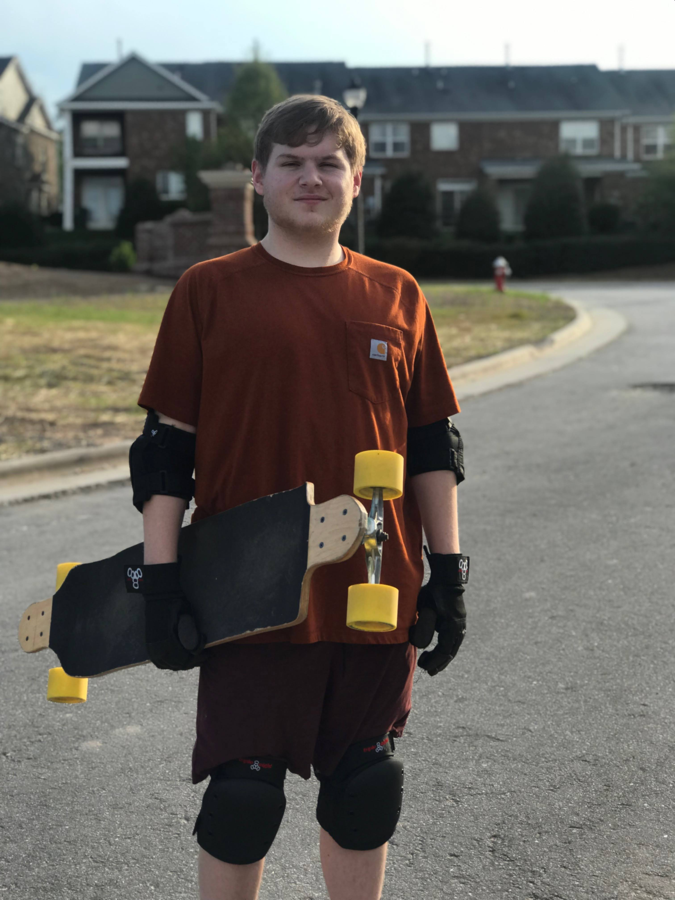

I am a student at the University of North Carolina at Charlotte. At UNC Charlotte, I am majoring in Computer Science with a concentration in AI, robotics, and gaming, with minoring in Computer Engineering.
I have many things I like to do in my free time. I like to play video games, go rock climbing/bouldering, go longboarding, build/launch rockets, and learn about front-end development.

Charlotte, NC
Bachelor of Science in Computer Science
summa cum laudeDecember 2022
GPA: 3.94
Concentration: Artificial Intelligence, Robotics, Gaming
Minor: Computer Engineering
March 2023
Microsoft
The Azure Fundamentals certification (AZ-900) have demonstrated foundational level knowledge of cloud services and how those services are provided with Microsoft Azure
C#, HTML/CSS, Java, JavaScript/TypeScript, Python, SQL
Angular, Jupyter Notebook, Pandas, Matplotlib, Scikit-learn, Spring Boot, ROS, .NET
Git/Github, Jenkins, Jira, Microsoft Azure, Microsoft 365, Splunk, App Dynamics, Elastic APM, Harness, OpenShift, Amazon S3
Charlotte, NC
Wells Fargo
July 2024 - Current
Charlotte, NC
Wells Fargo
February 2023 - July 2024
Charlotte, NC
University of North Carolina at Charlotte
August 2022 - December 2022
Charlotte, NC
Wells Fargo
June 2022 - August 2022
Charlotte, NC
University of North Carolina at Charlotte
TreasurerDecember 2021 - December 2022
Charlotte, NC
University of North Carolina at Charlotte
March 2022 - December 2022
Charlotte, NC
South Mecklenburg High School
August 2018 - December 2018
{kind=link}